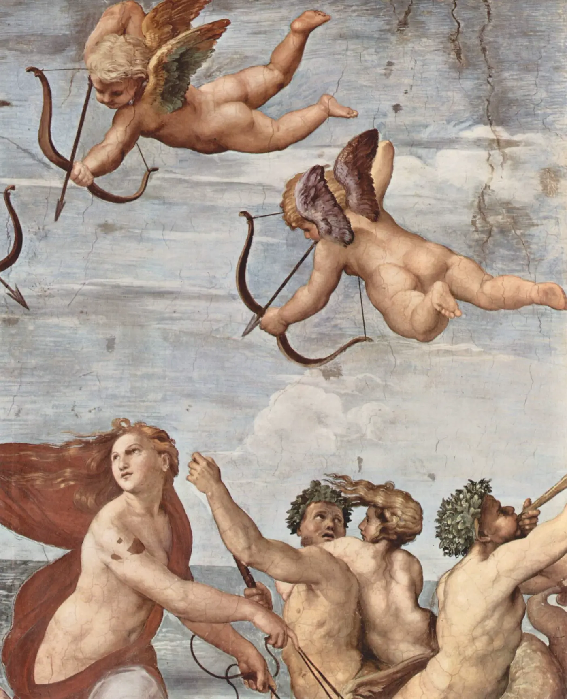

Galatea
Ein Name, zwei Geschichten: die Nereide des Meeres und die von Venus belebte Elfenbeinstatue.
Zwei
Galateas
Die antiken Texte erzählen nicht eine einzige Galatea-Geschichte. Sie überliefern zwei verschiedene Figuren, die erst viel später unter demselben Namen zusammenfanden.
Die erste Galatea ist eine Nereide, eine Meeresnymphe. Die zweite ist in Ovids Erzählung namenlos: Pygmalions kunstvoll geschaffene Statue, die durch Venus lebendig wird. „Galatea“ wurde für sie erst nach der Antike gebräuchlich.
Galatea aus dem Meer
Bei Theokrit besingt der Kyklop Polyphem seine Liebe zur Meeresnymphe Galatea. Idyll 11 zeigt sein vergebliches Werben und den Trost, den er im Gesang findet; Idyll 6 spielt ironisch mit einem umgekehrten Werben.
Ovid gestaltet die Geschichte dramatischer: Galatea liebt Acis. Der eifersüchtige Polyphem erschlägt ihn mit einem Felsblock; Galatea verwandelt das Blut des Geliebten in den Fluss Acis.
Eine Gestalt des Meeres, der Liebe und der Verwandlung.


Pygmalions Schöpfung
In Ovids Metamorphosen X erschafft Pygmalion aus schneeweißem Elfenbein eine Frauengestalt von vollkommener Schönheit und verliebt sich in sein Werk. Beim Fest der Venus bittet er um eine Gefährtin, die seiner Statue gleicht. Venus versteht den Wunsch; unter seiner Berührung wird das Elfenbein warm und lebendig.
Ovid gibt der Statue keinen Namen. Die Bezeichnung „Galatea“ ist nachantiken Ursprungs. Jean-Jacques Rousseaus 1762 verfasstes Pygmalion nennt die belebte Statue „Galathée“.

Kunst wird Gegenwart.
Pygmalion und Galatea, Jean-Léon Gérôme, ca. 1890, Metropolitan Museum of Art, New York · Wikimedia Commons, gemeinfrei
Warum
Galatea?
Der Name trägt die Idee einer geschaffenen Figur, die nicht statisch bleibt, sondern zu einer lebendigen Gegenwart wird. Für unseren Avatar ist das keine Behauptung über antike Figuren, sondern eine moderne Metapher: Technologie, Stimme und Persönlichkeit verbinden sich zu dem Moment, in dem eine digitale Gestalt sagen kann: „I Am Alive“.
Quellen
- Theokrit, Idyllen 6 und 11: griechischer Text bei Ad Fontes.
- Ovid, Metamorphosen X, 243–297: Pygmalion und die Statue.
- Ovid, Metamorphosen XIII, ab 750: Galatea, Acis und Polyphem.
- Jean-Jacques Rousseau, Pygmalion, 1762: Werkübersicht der Universität Genf.
- Bild- und Lizenzseiten: Raffael, Regnault, Gérôme.